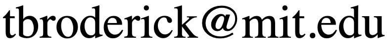

Part I: Friday June 21, 2:15 PM–3:00 PM, EDT
Part II: Friday June 21, 3:15 PM–4:00 PM, EDT
Part III: Friday June 21, 4:15 PM–5:00 PM, EDT
Instructor:
Professor Tamara Broderick
Email: 
Title: Variational Bayes and beyond: Foundations of scalable Bayesian inference
Abstract: Bayesian methods exhibit a number of desirable properties for modern data analysis---including (1) coherent quantification of uncertainty, (2) a modular modeling framework able to capture complex phenomena, and (3) the ability to incorporate prior information from an expert source. In practice, though, Bayesian inference necessitates approximation of a high-dimensional integral, and some traditional algorithms for this purpose can be slow---notably at data scales of current interest. The tutorial will cover modern tools for fast, approximate Bayesian inference at scale. One increasingly popular framework is provided by "variational Bayes" (VB), which formulates Bayesian inference as an optimization problem. We will examine key benefits and pitfalls of using VB in practice, with a focus on the widespread "mean-field variational Bayes" (MFVB) subtype. We will highlight properties that anyone working with VB should be aware of. We will motivate our exploration throughout with practical data analysis examples. If time permits, we will briefly discuss some recent advances and open problems in the field.